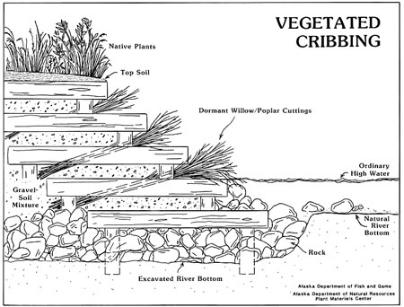

Vegetated Cribbing
What is it?
Vegetated cribbing is a bank stabilization technique used at sites where slope grating and revegetation techniques are not appropriate or provide enough erosion protection. The bank is stabilized using tiered log structures with integrated plant cuttings.
 (diagram from the Alaska Department of Fish and Game)
Vegetated cribbing installation (photo from the Alaska Department of Fish and Game)
Vegetated cribbing 3 weeks after installation (photo from the Alaska Department of Fish and Game)
Conservation Benefits
- Promotes bank stabilization and revegetation
- Reduces sediment input into streams
What does it include?
Cross timbers are built into and along the bank to form tiered layers to support a backfill of soil and vegetation plantings. Tiers should follow the contour of the bank and can be as tall on the bank as needed. Extra support can be added to the structure by using cross timbers.
Vegetated Cribbing Links
- Live cribwall (NRCS)
- Live cribwall (p 17; TCEQ)
- Live cribwalls (p 89; Center for Watershed Protection
- Live cribwall (Ohio Department of Natural Resources)
- Live cribwall (The Rouge River Project)
- Live cribwalls (p 23; University of Virginia)
- Vegetated Cribbing (Alaska Department of Fish and Game)
- Vegetated Cribbing (New York Department of Environmental Conservation)
- Vegetated Cribbing (Northwest Regional Planning Commission)
Vegetated Cribbing Bibliography